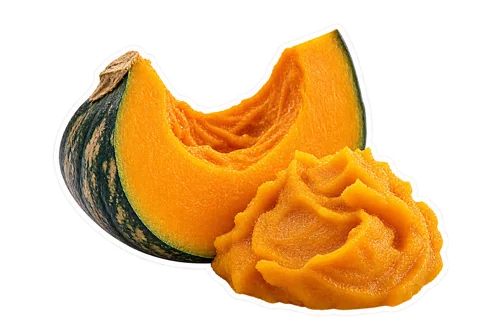
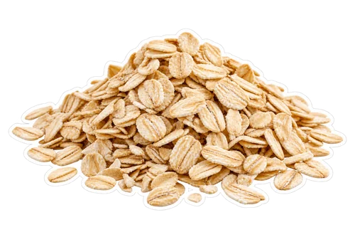

What you will need
Yield: 2 small glasses (about 2 cups). Final volume changes with fruit, straining, and liquid adjustments.

½ cup plain cooked pumpkin purée (about 120 g)
¼ cup plain rolled oats (about 20 g)- ¾ cup cold milk or unsweetened plant milk (180 ml)
- ½ cup plain yogurt (about 120 g)
- ¼ teaspoon ground cinnamon
- Optional: 1–2 teaspoons maple syrup, to taste
How to make it
Check that the pumpkin is plain cooked purée, not pumpkin pie mix. Put the oats and milk in a small bowl and let them sit for 10 minutes while you gather the other ingredients.
Pour the oat-and-milk mixture into the blender. Add pumpkin purée, yogurt, and ¼ teaspoon cinnamon. Do not use raw pumpkin chunks as a direct substitute for the cooked purée.
Blend until as smooth as your machine comfortably makes it. Stop before scraping or redistributing contents. Add another tablespoon of milk if the mixture needs more movement.
Taste before adding syrup. If desired, blend in 1 teaspoon maple syrup, then taste again before adding the second. Keep cinnamon to a small adjustment rather than tipping in a large extra spoonful.
Divide between two small glasses and serve. The oats can make the mixture thicker as it stands, so stir and adjust with a splash of milk if needed.
Choose plain pumpkin purée at the shelf
Read the label before opening the can. Plain pumpkin purée and pumpkin pie mix are separate products; Libby’s lists them separately in its product range. The measured recipe uses plain cooked purée so the cinnamon and optional sweetener stay under your control. Pie mix can bring a different ingredient profile, so it is not a direct swap without adjusting the other ingredients. You do not need a particular brand, but you do need the intended form. Keep any opened purée stored according to its label and ordinary food-safe handling guidance.
Use cooked homemade pumpkin with the same texture goal
If you already have homemade cooked pumpkin purée, measure ½ cup of smooth, cooled purée for the first batch. A watery purée may need less milk, while a dense one may need a little extra. Do not add hot cooked pumpkin to a container of cold ingredients and assume the blender can handle the combination safely; follow the machine’s temperature guidance. The recipe is a cold smoothie, so cooling the prepared purée first is the practical approach. Roasting or cooking raw pumpkin is a separate preparation step, not part of the 15-minute estimate here.
Rolled oats need a plan for texture
The recipe starts with plain rolled oats rather than a flavored instant-oatmeal packet. The 10-minute sit in milk is a preparation choice to make a softer starting mixture, not a guarantee that every blender will produce an invisible oat texture. Quaker’s pumpkin oat smoothie method uses a different approach: grinding oats first. Either way, choose a method your machine can handle. If your blender struggles with a small dry quantity, use the milk-soaking method on this page rather than repeatedly running it empty or forcing dry grinding against its instructions.
Why yogurt takes the banana role here
Pumpkin purée supplies the main flavor and body, while plain yogurt contributes creaminess and oats add another texture element. Banana is not needed in the measured recipe and would bring its own flavor. If you are deliberately choosing a banana-free drink, make the written version first so you can judge the pumpkin and cinnamon balance. A ripe banana is not the only route to a creamy smoothie. The ingredient roles matter more than copying the same fruit base into every recipe in your collection.
Choose milk and yogurt together
Dairy milk and plain dairy yogurt are the original starting option, but you can make a dairy-free trial with unsweetened plant milk and plain plant-based yogurt. Taste the products on their own before blending if their flavor is unfamiliar. Oat milk, soy milk, coconut yogurt, and other choices can change the finished taste and thickness. Read labels for allergens, sweeteners, and any personal dietary requirements. We do not give one exact protein or calorie figure across these variations, because the actual ingredient labels and serving amounts would be needed for a meaningful calculation.
Make cinnamon a measured accent
Start with ¼ teaspoon ground cinnamon for the two-glass batch. Blend it fully into the liquid rather than leaving a thick pile of dry spice on top. If you want a little more after tasting, add a small pinch and blend again. If you prefer a mixed pumpkin-spice flavor, try replacing the cinnamon with a modest amount of your chosen culinary spice blend on another batch and check its ingredients. More spice is not automatically more enjoyable, and a heavily seasoned drink can make it harder to notice the pumpkin you started with.
Adjust sweetness separately from thickness
The recipe leaves maple syrup optional. Taste the smoothie before adding any, then try 1 teaspoon if wanted and stop there if the balance suits you. Sweetened milk or yogurt may make that addition unnecessary. If the smoothie is thick but not sweet enough for your preference, those are two different adjustments: a spoonful of milk changes consistency, while syrup changes sweetness and flavor. If you added too much syrup, try blending a small extra portion of unsweetened base rather than adding more cinnamon to cover it. Keep a note of your preferred amount.
Fix a gritty or overly thick smoothie
If oats remain more noticeable than you like, blend again within your machine’s guidance or try a longer refrigerated soak on the next batch. Do not promise yourself a perfectly silky result from a machine that leaves coarse particles. If the mixture becomes thick after standing, stir in a little milk just before drinking. For a thinner first blend, use slightly less oat on the next small trial rather than flooding the full batch with a large amount of water. The texture is meant to be creamy and pourable, with room for your own preference.
Scale the recipe without hiding the preparation time
For one small glass, use ¼ cup pumpkin purée, 2 tablespoons rolled oats, ⅜ cup milk, ¼ cup yogurt, and a small pinch of cinnamon. For four small glasses, use 1 cup pumpkin, ½ cup oats, 1½ cups milk, 1 cup yogurt, and ½ teaspoon cinnamon. Keep the initial 10-minute oat sit rather than doubling it just because the batch is larger. Check blender capacity before doubling everything at once. Preparation time assumes you already have cooked purée; making that ingredient from a raw pumpkin takes additional time.
Use the open pumpkin container thoughtfully
Before blending, decide what you will do with the remaining purée. Follow the label’s refrigerated storage directions, label any portion you save, and plan another use you genuinely want rather than making several smoothies simply to empty a can. You can portion ingredients ahead, keeping the milk and yogurt separate until needed. If preparing an oat mixture for a longer wait, cover and refrigerate it. Our smoothie meal-prep guide gives more ideas for organizing small batches, while the banana-free guide explains how to choose ingredients by texture and sweetness rather than by a fixed fruit habit.
Serving and keeping a portion
Prepare a small batch close to serving for the texture and temperature you enjoy. If saving some, cover and refrigerate promptly. Stir before serving and use any opened packaged ingredients according to their labels. Citrus and ginger do not make a homemade drink shelf-stable. Keep utensils and containers clean and handle cut produce and dairy or plant-based ingredients with care.
FoodSafety.gov recommends refrigerating perishable food within two hours, or one hour above 90°F, and keeping the refrigerator at 40°F or below.
Questions before you begin
Can I use steel-cut oats?
They are not the direct swap for rolled oats in this short preparation. Use the written rolled-oat ingredient, or develop a separate cooked-oat variation with different amounts and timing.
Can I use pumpkin pie mix?
The written recipe uses plain pumpkin purée. Pie mix changes the starting ingredients and sweetness, so choose plain purée if you want to follow these measurements.
Is this a hot smoothie?
No. It is an autumn-flavored cold smoothie. Use cooled cooked purée and chilled milk or other liquid, following the blender’s temperature guidance.
Preparation sources and recipe standards
These sources support specific ingredient forms and preparation choices. They do not establish kitchen testing of this recipe or health effects of the finished drink.
We use AI-generated photography-style images and ingredient cutouts. Actual appearance varies with ingredients and preparation. We do not describe this recipe as kitchen-tested. Read our recipe standards, and share a specific correction if a quantity or preparation step needs attention.